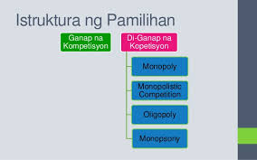
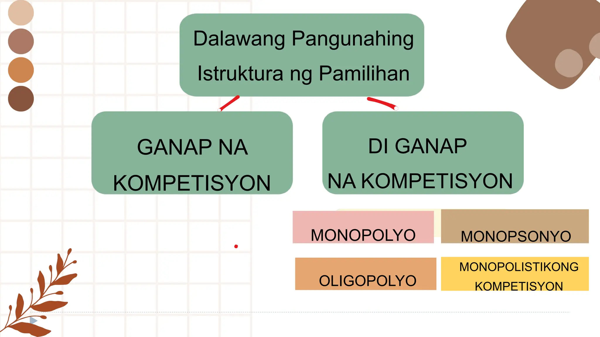

💜 Lesson 5: Estruktura ng Pamilihan
Kahulugan
Ang estraktura ng pamahalaan ay tumutukoy sa kung paano nakaayos ang ugnayan ng mga konsyumer at produsyer sa isang ekonomiya. Ipinapakita rito kung gaano karaming sellers ang nagkokontrol ng presyo, kalidad, at dami ng produkto sa merkado.
Dalawang Uri ng Kompetisyon
GANAP (Perfect Competition): Ang pamilihan ay sinasabing may ganap na kompetisyon kapag ang sinumang negosyante ay walang kapangyarihan na palitan o baguhin ang presyo ng pamilihan.
- Magkakatulad ang mga produkto
- Marami ang mamimili at tindera ng produkto
- May kalayaan sa paglabas at pagpasok sa negosyo
- Maalwang paggalaw ng mga salik ng produksyon
- Sapat na kaalaman at impormasyon
DI-GANAP (Imperfect Competition): Mayroong kumokontrol sa presyo, may hadlang sa pagpasok ng negosyante at tindera sa industriya, nabibilang ang dami ng mamimili at negosyante, at limitado ang pagpipiliang produkto.
Uri ng Pamilihian (Detalyado)
| Uri ng Pamilihian | Deskripsyon | Halimbawa |
|---|---|---|
| Ganap na Kompetisyon (Perfect Competition) | Marami ang maliliit na negosyo rito at pare-pareho ang produkto. Wala ring may kontrol sa presyo sapagkat nakabase ito sa demand at supply. | Pagtitinda sa palengke |
| Monopolyo (Monopoly) | Iisang produsyer lamang ang nagbebenta ng produkto at may buong control sa presyo at supply nito. Mahirap itong pasukin ng bagong mga negosyo dahil sa legal at teknikal na humahadlang dito. | Meralco |
| Monopsonyo (Monopsony) | Ito ang kabaliktaran ng monopolyo kung saan may iisang mamimili ng produkto. Marami ang lumikha ng produkto at serbisyo ngunit nag-iisa lamang ang mamimili sa pamilihan. | Pamahalaan — bumibili ng serbisyo ng mga sundalo o militar |
| Monopolikong Kompetisyon (Monopolistic Competition) | Maraming mga produsyer ang nagbebenta ngunit may kaibahan sa kanilang mga produkto. May konting kontrol sa presyo dahil sa pagkakaiba ng produkto at paggamit ng branding at advertising. | Milk tea shops |
| Oligopolyo | Iilang malalaking kompanya lang ang nagkokontrol sa buong merkado. Kapag tumaas ang presyo ng isa, susunod na rin ang iba upang hindi malugi. Madalas may price war dito. | Shell, Petron, Caltex, atbp. |
| Kartel | Grupo ng mga kompanya na nagkakasundo sa presyo at supply. Layunin na kontrolin ang merkado para tumaas ang kanilang kita. Ilegal ito sa ibang bansa dahil nakasasama sa mga konsyumer. | OPEC (Organization of Petroleum Exporting Countries) |

